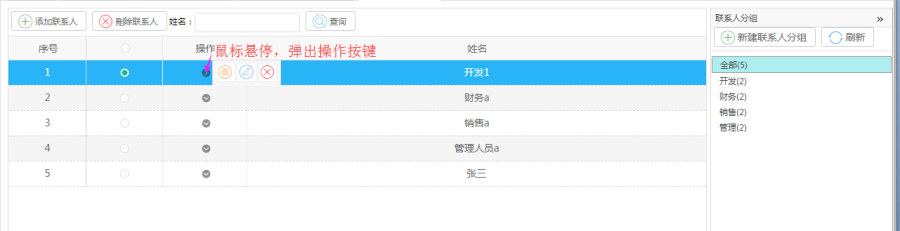
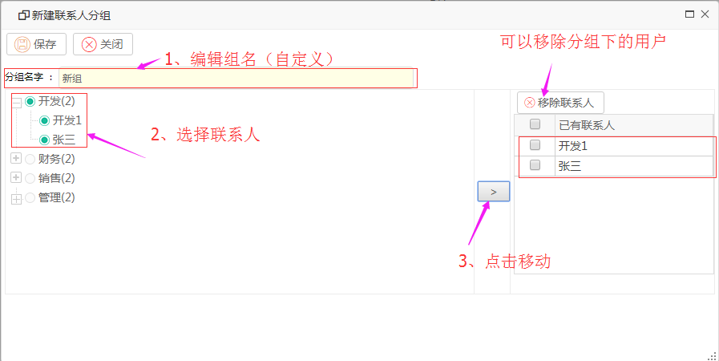
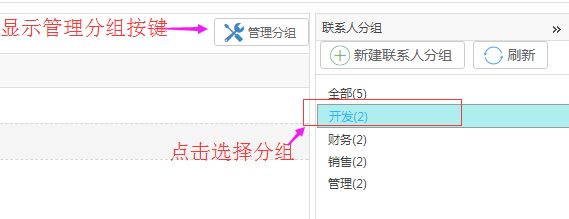
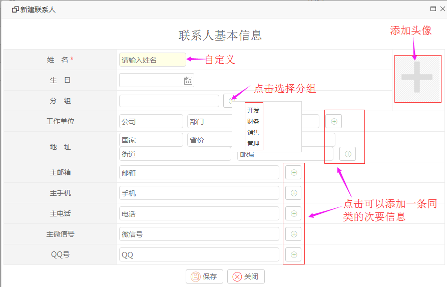
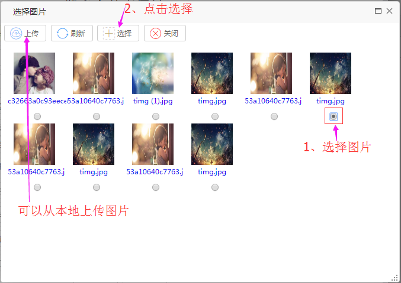
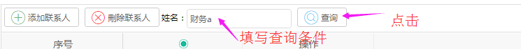

我的通讯录
功能描述：作用于外部邮件的通讯录管理，可查看或添加通讯录中的联系人，对应的分组中绑定相应的联系人。
界面展示：

【说明】
添加联系人：添加新的联系人
删除联系人：删除选中联系人
查询：根据条件查询联系人
新建联系人分组：为联系人添加新的分组
管理分组：删除或编辑分组
操作指导：
【添加联系人分组】
操作：点击新建联系人分组，输入分组名字，把需要的，已存在的联系人加到这个联系人分组下，点击保存即可完成新建联系人分组。

【管理分组】
操作：点击选择分组，显示出管理分组按键，点击管理分组按键（管理分组的具体操作参照添加联系人分组）。

【添加联系人】
操作：点击添加联系人按键，填写好联系人信息，点击保存（注：一个联系人可以多个分组）。

【添加头像】
操作：点击“+”进入选择头像界面，选择好图片，点击选择。

【查询】
操作：填写查询条件，点击查询按键。
